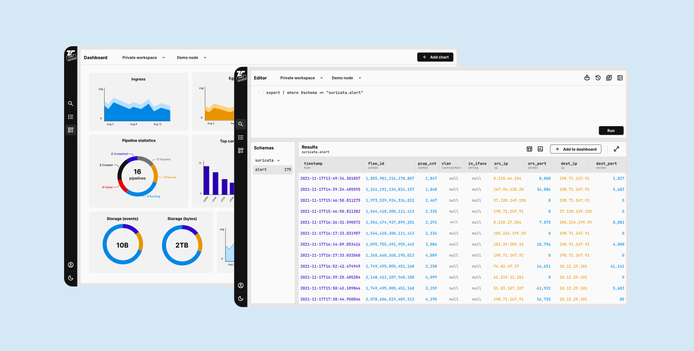
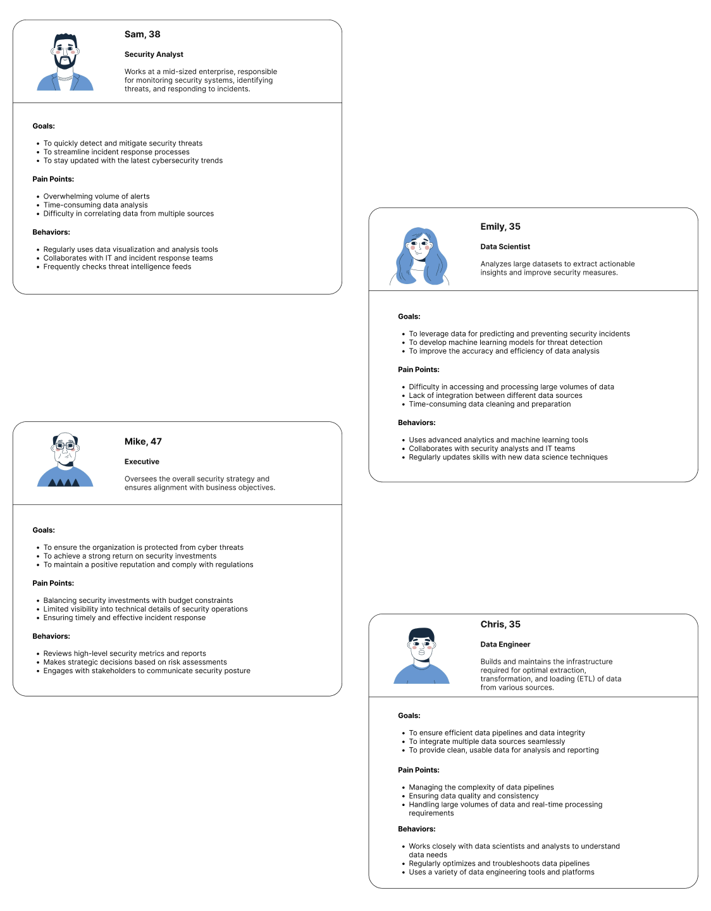
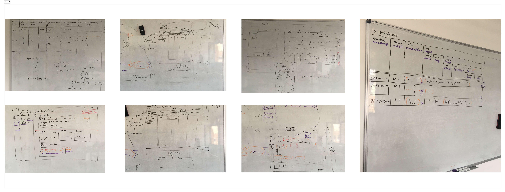
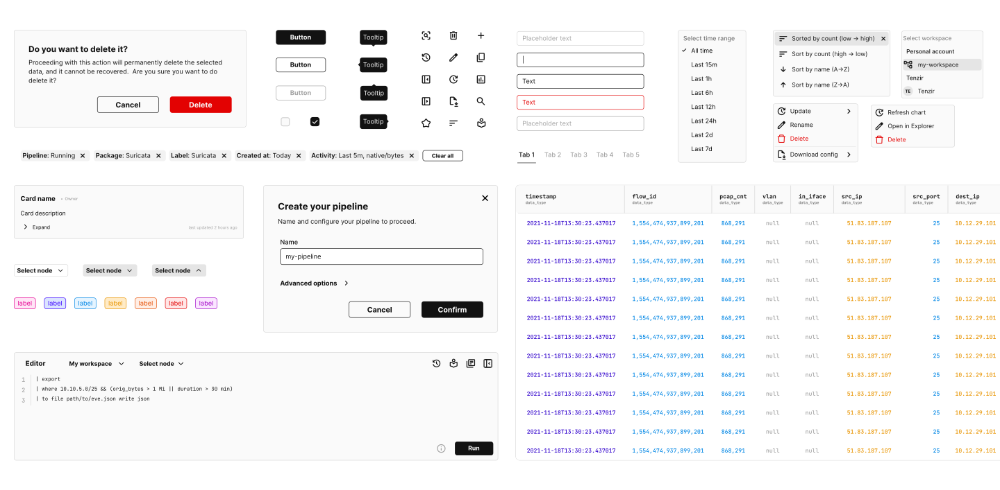

MVP for Cybersecurity Data Management SaaS

Overview
Tenzir is a company that specializes in providing data management solutions for security teams. Their goal is to help organizations efficiently process, analyze, and store large volumes of security data. Key features and functionalities of Tenzir include: data ingestion, data processing, scalability, analytics, storage optimization and integration. I was hired as the first and only Product Designer on the team and tasked to design the MVP.
Problem
Organizations face challenges managing vast amounts of diverse and complex security data, leading to difficulties in data integration, slow processing, high storage costs, and limited analytical capabilities. This hampers their ability to detect and respond to threats efficiently.
Solution
Tenzir provides a scalable platform for efficient data ingestion, processing, and storage, integrating diverse data sources into a unified format. It enhances data analysis with powerful tools, supports fast processing, and offers optimized storage solutions, allowing organizations to improve threat detection and incident response capabilities.
Role
Principal Product Designer
Data Visualization
Process
Research
Ideation
Design
Testing
Tools
Figma
Slack
Github
Excalidraw
Research&Analysis
Stakeholder interviews
I conducted interviews with internal stakeholders, including the founder, engineering manager, and engineers, to tap into their existing knowledge about user needs, workflows, and design preferences. From these discussions, I developed a clear understanding of the key UI features, design goals, and performance requirements. Our goal was to get a basic version of the product to market quickly to start gathering real-world feedback.
Competitive benchmarking
I looked at various user interfaces of leading competitors in the cybersecurity data management space to see what they offer, how users experience them and where they could be better. Even though the competition provides powerful and fast search and filtering capabilities, clean and modern UI, and extensive library of visualization options, I have noticed that in most cases the interface appears overwhelming due to its complexity and the large number of features available, making it difficult for new users to navigate. The UI can also be slow, particularly when handling large datasets.
Personas
Based on the combination of existing knowledge from internal stakeholders, assumptions based on similar products, and industry insights, I created hypothetical user personas.

Ideation&Design
User stories
I focused on several user stories that captured the core functionality needed for the MVP.
As a Data Engineer I want to...
- add a node to the system so that I can integrate additional data sources or processing capabilities.
- create a data pipeline so that I can define the flow and transformation of data from source to destination.
- analyze data through interactive visualizations so that I can identify patterns and detect anomalies.
- deploy a data pipeline so that it starts processing data as defined in its configuration.
- view a list of all created pipelines and their statuses so that I can monitor and manage their performance.
User flows
I created user flow diagrams for the key user stories by mapping out each step and interaction, ensuring a seamless and intuitive user experience while addressing essential user needs and functionalities.
Brainstorming
We then gathered with the product team for a quick brainstorming and sketching out ideas on a whiteboard.

Design system
I designed the first design system for Tenzir, establishing guidelines and components to ensure consistency and efficiency across all digital products. This system streamlines the design process, enhances collaboration, and maintains a unified brand identity.

Prototypes
I enhanced the wireframes with more detailed design elements, including typography, icons, and spacing. I also added annotations to explain interactions and functionality. Finally, I created interactive prototypes to simulate user interactions and provide a more realistic preview of the final product. The prototypes were iterated upon multiple times based on feedback and usability testing with the product team, ensuring the design was user-centric and functional.
Reflection
Creating the MVP for Tenzir was a rewarding and insightful experience. Despite limited direct user research, I relied on internal stakeholder interviews and their industry expertise to identify core needs and pain points. Collaborative brainstorming sessions and iterative feedback loops were crucial in refining our ideas and aligning our vision. Developing interactive prototypes allowed us to test and validate assumptions, ensuring a functional, intuitive, and user-centric design. This project emphasized the importance of flexibility, effective communication, and iterative design in creating a successful MVP. It enhanced my skills and deepened my understanding of designing complex data management tools.
Other projects:
Real estate portfolio management SaaS